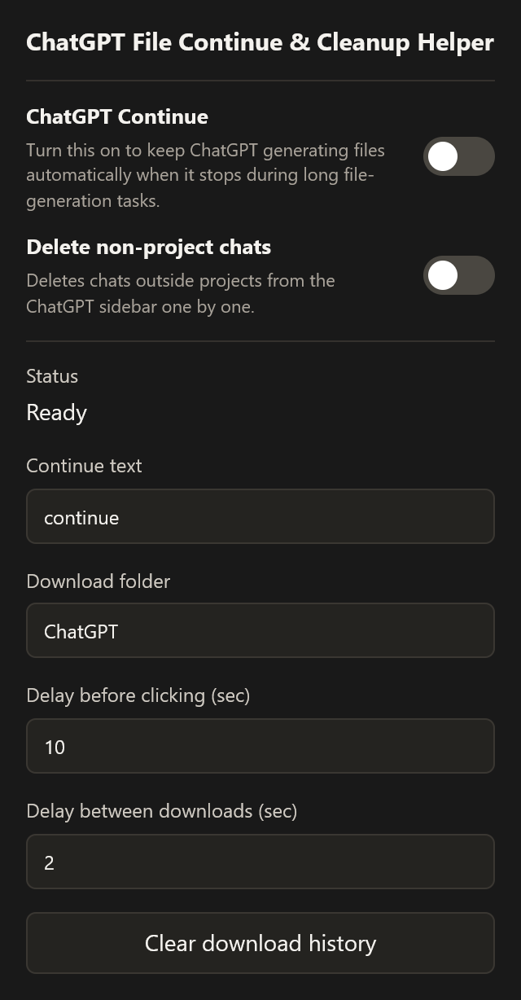

Local download history
The extension keeps IDs and progress for each processed reply in your browser profile. Clear download history pauses Continue and forgets these records. Files stay on disk.

ChatGPT File Continue & Cleanup Helper
When a reply contains several files, the extension waits for each download to finish before starting the next. After the last file, it sends your follow-up message in the same conversation.
How it works
The extension reads generated file references from the latest completed assistant reply in the active ChatGPT conversation.
Files are resolved by ID and saved to the folder you choose. The extension checks each browser download before starting the next.
After the final download and a short delay, the extension sends your configured text. The default message is continue.
Installation
Clone the repository, or open Code on GitHub and choose Download ZIP. Extract the archive and locate the folder containing manifest.json.
Open chrome://extensions or brave://extensions. Enable Developer mode, choose Load unpacked and select that folder.
Open or reload a conversation, open the extension popup and turn on ChatGPT Continue. Both modes start off after installation.
Optional cleanup
Delete non-project chats processes one eligible conversation at a time, including chats other than the one you have open. It takes priority over downloads and proceeds without asking for confirmation on each chat.
Project chats are protected by ID for the current tab session. If the conversation list has no eligible chat, the extension can check links in an English sidebar. Before hiding a sidebar chat, it verifies that the ID matches and that ChatGPT explicitly reports no project membership. It skips unverified links, even when two chats have the same title.
Privacy & testing
The extension keeps IDs and progress for each processed reply in your browser profile. Clear download history pauses Continue and forgets these records. Files stay on disk.
Both modes use your signed-in ChatGPT session. The popup reports interrupted downloads and unconfirmed follow-ups. Temporary delivery URLs are kept out of the extension’s stored records.
The automated tests use simulated chats and downloads to check cleanup, download order and retries. Read the test report.